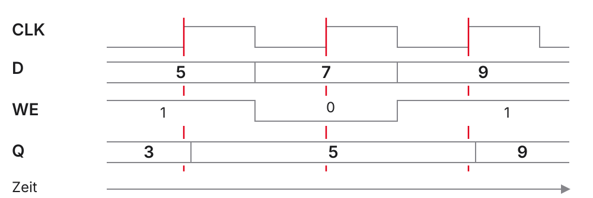
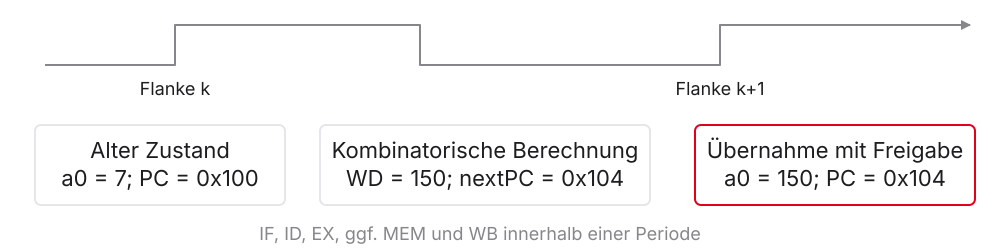
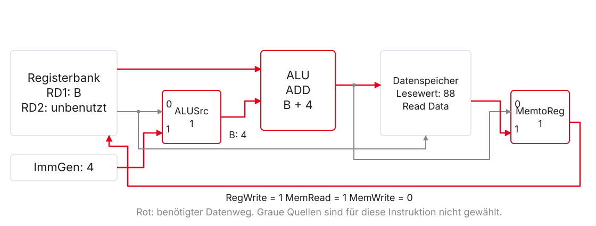
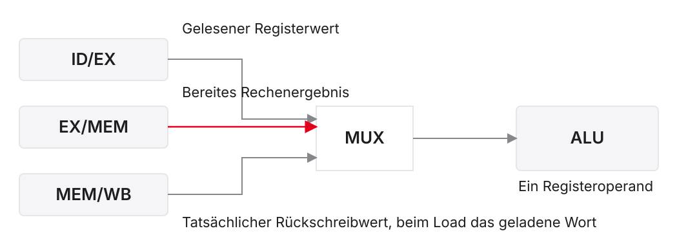

Mikrocomputertechnik 1
Einheit 9: Klausurwiederholung zu Vorlesung 1–7
Prof. Dr.-Ing. Daniel Klünder
Sieben Vorlesungen, ein Zusammenhang
| 1: Bits, Logik, Register |
Wie werden Werte dargestellt und gespeichert? |
| 2–3: Befehle, Speicher, Sprünge |
Welche Zustandsänderung beschreibt das Programm? |
| 4: Funktionen und Stack |
Was bleibt über einen Aufruf hinweg erhalten? |
| 5–6: Datenpfad und Steuerung |
Welche Quellen und Freigaben bewirken den Befehl? |
| 7: Pipeline und Performance |
Wann sind Ergebnisse verfügbar, wie lange dauert es? |
Den Vertrag vor der Rechnung festlegen
- ISA: RV32I, 32-Bit-Register, Byteadressen, hier Little Endian
- Keine komprimierten Befehle: echte Instruktionen belegen vier Byte
- ABI: ILP32, skalare Rückgabe in
a0, Stackausrichtung 16 Byte
- Datenpfad: acht ausdrücklich unterstützte Befehle aus Vorlesung 5–6
- Pipeline: fünf Stufen und die Konventionen aus Vorlesung 7
ISA und Mikroarchitektur beantworten andere Fragen
| ISA |
Alte Quellwerte addieren, untere 32 Bit nach a0 |
| ABI |
a0 ist ein Argument- und Rückgaberegister |
| Mikroarchitektur |
Konkreter Datenweg, Taktzahl, Konfliktbehandlung |
Gleiche Befehlswirkung verlangt keine gleiche Ausführungszeit.
Bitmuster brauchen eine Interpretation
Für acht Bit:
\[1010\,1100_2=\mathtt{0xAC}\]
| Ohne Vorzeichen |
\(172\) |
| Zweierkomplement |
\(172-256=-84\) |
| Vorzeichenerweitert auf 32 Bit |
0xFFFFFFAC |
Selbsttest: Welchen Wert hat das Muster 0x7C in beiden Lesarten?
Übertrag und Überlauf getrennt prüfen
Beispiel mit acht Bit:
\[0110\,1000_2+0011\,0100_2=1001\,1100_2\]
- Unsigned: \(104+52=156\), kein Übertrag aus Bit 7
- Signed: zwei positive Operanden, negatives Ergebnis \(-100\)
- Vorzeichenbehafteter Überlauf trotz fehlenden äußeren Übertrags
RV32I-Rechnungen behalten die unteren 32 Bit; kein Überlauf-Flag.
Logik: auswählen und bitweise rechnen
Ein Ein-Bit-Multiplexer mit Auswahl \(S\):
\[Y=(\overline{S}\land A)\lor(S\land B)\]
Ein Volladdierer mit eingehendem Übertrag \(C_\mathrm{in}\):
\[Z=A\oplus B\oplus C_\mathrm{in}\] \[C_\mathrm{out}=(A\land B)\lor(A\land C_\mathrm{in})\lor(B\land C_\mathrm{in})\]
Selbsttest: \(S=1\) sowie \(A=B=C_\mathrm{in}=1\) — welche Ausgaben?
Register: Die Flanke entscheidet

Selbsttest: Warum erscheint der Eingabewert 7 nie am Ausgang?
Registerbank und Nullregister
# Anfang: t0 = 18, t1 = 7
add t0, t0, t1
sub x0, t0, t1
addi t2, x0, -6
t0 |
\(25\) |
x0 |
\(0\) |
t2 |
\(-6\) |
Dieselben Bits, andere Operation
Anfang: t0 = 0xFFFFFFF0, Schiebebetrag vier.
srli t1, t0, 4 |
0x0FFFFFFF |
srai t1, t0, 4 |
0xFFFFFFFF |
slli t1, t0, 4 |
0xFFFFFF00 |
Bei Vergleich mit x0: blt nimmt den Sprung, bltu nicht.
Maschinenwort: Felder vor Hexziffern
| R |
funct7 · rs2 · rs1 · funct3 · rd · opcode |
| I |
imm[11:0] · rs1 · funct3 · rd · opcode |
rd, rs1, rs2 codieren Registernummern mit je fünf Bit- Opcode und Funktionsfelder bestimmen gemeinsam die Operation
- I-Format: Bits 24–20 gehören zum Immediate, nicht zu
rs2
Papiercheck: Ein negatives addi codieren
| imm[11:0] |
1111 1110 1100 |
| rs1 / funct3 |
01001 / 000 |
| rd / opcode |
01100 / 0010011 |
Welche Hexdarstellung entsteht? Lösung und Rückprüfung in den Notizen.
Speicher: Adresse, Inhalt und Byteordnung
Ein Wort 0xA1B2C3D4 liegt ab der gültigen Adresse 0x2400.
- Little Endian: niederwertigstes Byte an der kleinsten Adresse
- Wortausrichtung: effektive Adresse durch vier teilbar
- Ein 32-Bit-Adressraum bedeutet nicht vier GiB eingebauten Speicher
Zugriffsbreite und Erweiterung
Weiterhin: s0 = 0x2400, Byte dort 0xD4.
lb t0, 0(s0) |
t0 = 0xFFFFFFD4, also \(-44\) |
lbu t1, 0(s0) |
t1 = 0x000000D4, also \(212\) |
sb t2, 1(s0), t2 = 0x12345678 |
Nur Byte 0x2401 wird 0x78 |
Das anschließende lw ab 0x2400 liefert 0xA1B278D4.
Arrays: Index in Byteoffset übersetzen
Angenommen: vier Byte pro Element, Basis s0 = 0x3500, Index t0 = 3.
slli t1, t0, 2
add t1, s0, t1
lw a0, 0(t1)
\[\mathrm{Adresse}(A[3])=\mathtt{0x3500}+4\cdot3=\mathtt{0x350C}\]
Bei bereits fortgeschaltetem Pointer nicht noch einmal den Index addieren.
Store- und Branch-Felder richtig zusammensetzen
S: sw |
imm[11:5] aus [31:25], imm[4:0] aus [11:7] |
B: beq |
imm[12|10:5|4:1|11] aus [31|30:25|11:8|7] |
Für Branches: Bit 0 ist null; danach signed-Byteoffset.
\[PC=\mathtt{0x180},\quad\mathrm{Offset}=-12\] \[PC_\mathrm{Ziel}=\mathtt{0x174},\qquad PC_\mathrm{weiter}=\mathtt{0x184}\]
Schleifen: Kontrollfluss vollständig verfolgen
# Anfang: s0 = gültige Arraybasis, s1 = 3, t0 = t1 = 0
Loop:
bge t0, s1, Done
lw t2, 0(s0)
add t1, t1, t2
addi s0, s0, 4
addi t0, t0, 1
jal x0, Loop
Done:
Arraywerte: [7, -2, 4]. Selbsttest: Endsumme und dynamische Befehlszahl?
Aufruf und Rückkehr sind Adressoperationen
Bei altem \(PC=\mathtt{0x200}\):
jal ra, +32 |
0x220 |
ra = 0x204 |
jalr ra, 0(t0), t0 = 0x301 |
0x300 |
ra = 0x204 |
ret |
ra mit Bit 0 gelöscht |
kein gespeicherter Link |
ret stellt weder sp noch gesicherte Register automatisch wieder her.
ABI: Wer muss welchen Wert erhalten?
a0–a7, t0–t6 |
Caller muss noch benötigte Werte schützen |
s0–s11 |
Callee muss geänderte Werte wiederherstellen |
ra |
Ein weiterer Aufruf kann den alten Link überschreiben |
sp |
Bei Rückkehr wieder der Eintrittswert |
Selbsttest: Ein Wert in t2 wird nach jal noch benötigt. Ist er sicher?
Stackframe: Platz, Inhalt und Ausrichtung
Angenommen: sp = 0xA000, Sicherung von ra und s0.
addi sp, sp, -16
sw ra, 12(sp)
sw s0, 8(sp)
# ... Funktionsrumpf ...
lw s0, 8(sp)
lw ra, 12(sp)
addi sp, sp, 16
ret
Neuer sp = 0x9FF0; Slots bei 0x9FFC und 0x9FF8.
Nichtblattfunktion: Zwei Lebensdauern schützen
# compose(x): helper(x) + x; helper(x) liefert x + 5
compose:
addi sp, sp, -16
sw ra, 12(sp)
sw s0, 8(sp)
addi s0, a0, 0
jal ra, helper
add a0, a0, s0
lw s0, 8(sp)
lw ra, 12(sp)
addi sp, sp, 16
ret
Für \(x=6\): Ergebnis \(17\); alter s0, ra und sp wiederhergestellt.
Single Cycle: Berechnen, dann übernehmen

- Datenweg liefert den möglichen neuen Wert
- Steuerwerk wählt Quellen und erlaubt Zustandsänderungen
- Fünf logische Tätigkeiten sind hier keine fünf Takte
Load und Store: Adresse und Daten

lw: Adresse \(B+4\) → Wert \(88\) nach a0.
sw: Adresse \(B+8\) ← Wert aus a0, kein Registerziel.
Branch: Bedingung und Ziel getrennt herleiten
Für beq t0, t1, Ziel:
\[\mathrm{Zero}=(R[t0]-R[t1]=0)\] \[PC_\mathrm{Ziel}=PC+\mathrm{Byteoffset}\] \[\mathrm{PCSrc}=\mathrm{Branch}\land\mathrm{Zero}\]
Bei PC = 0x400, Offset \(+20\):
Gleichheit → 0x414; Ungleichheit → 0x404.
Der längste Pfad begrenzt den Takt
Angenommene Lehrwerte für einen vollständigen Load-Pfad:
| 180 ps |
90 ps |
140 ps |
240 ps |
90 ps |
Zusätzlich 20 ps für Registerausgang und Setup zusammen:
\[T_\mathrm{SC}=180+90+140+240+90+20=760\,\mathrm{ps}\]
Auch ein add erhält im selben Single-Cycle-Modell einen ganzen Takt.
Steuertabelle aus der Wirkung ableiten
add/sub/and/or |
0 |
0 |
1 |
0 |
0 |
0 |
lw |
1 |
1 |
1 |
1 |
0 |
0 |
sw |
1 |
X |
0 |
0 |
1 |
0 |
beq |
0 |
X |
0 |
0 |
0 |
1 |
addi |
1 |
0 |
1 |
0 |
0 |
0 |
Erst Quellen wählen, dann erlaubte Zustandsänderungen prüfen.
Hauptsteuerung und ALU-Steuerung trennen
lw/sw/addi |
00 |
Addition 0010 |
beq |
01 |
Subtraktion 0110 |
add/sub/and/or |
10 |
Funktionsfelder auswerten |
Registergruppe: add 0010, sub 0110, and 0000, or 0001.
Selbsttest: Warum macht Bit 30 aus addi keine Subtraktion?
Don’t Care: Welche Wirkung bleibt?
Für gültig erkannte Gruppen \(R,L,S,B,I\):
\[\mathrm{RegWrite}=R\lor L\lor I,\quad
\mathrm{ALUSrc}=L\lor S\lor I\]
| MemtoReg kippt, RegWrite = 0 |
Keine sichtbare Wirkung |
| MemWrite wird 0 |
Gewünschter Store fehlt |
| RegWrite wird 1 |
Unerlaubter Registerschreibversuch möglich |
X: Auswahl unerheblich bei gesperrter Übernahme.
Pipeline: Überlappung erhöht den Durchsatz
| I1 |
IF |
ID |
EX |
MEM |
WB |
|
|
| I2 |
|
IF |
ID |
EX |
MEM |
WB |
|
| I3 |
|
|
IF |
ID |
EX |
MEM |
WB |
Ohne Zusatzzyklen: \(C=N+4\).
Mit den zuvor angenommenen Lehrwerten: \(T_\mathrm{P}=240+20=260\,\mathrm{ps}\).
Einzelbefehl: \(1300\,\mathrm{ps}\) Latenz; danach ideal ein Abschluss je Takt.
Forwarding: Verfügbarkeit entscheidet

- Jüngster Treffer; RegWrite = 1 und
rd ≠ x0
- Load nach EX: Adresse statt geladener Daten
Load-Use: Eine Lücke bleibt erforderlich
lw t0, 0(s0) # gültige Adresse, Wort dort = 31
sub t1, t0, t2 # t2 = 6
lw |
IF |
ID |
EX |
MEM |
WB |
|
|
sub |
|
IF |
ID |
ID |
EX |
MEM |
WB |
| Bubble |
|
|
|
EX |
MEM |
WB |
|
Im Takt 4 warten PC und IF/ID; der Load läuft weiter. Ergebnis: t1 = 25.
WB und ID: Unsere Konvention beachten
add t0, t1, t2 # I1
addi a4, a4, 1 # I2: unabhängig
xor a5, a5, a5 # I3: unabhängig
sub t3, t0, t4 # I4
- I1 in WB und I4 in ID: beide zunächst im Takt 5
- Registerwert erst ab ID im Takt 6 lesbar; kein WB→ID-Bypass
- I4 wartet einen Takt: EX in 7, WB in 9
EX-Forwarding allein löst diesen besonderen Konflikt nicht.
Branch: Falschen Pfad verwerfen
Anfang: t0 = t1; Branch wird in EX entschieden.
beq t0, t1, Target
sw t2, 0(s0) # jüngerer falscher Pfad
addi t3, t3, 1 # jüngerer falscher Pfad
Target:
add a0, a1, a2
- EX-Entscheidung: zwei jüngere Befehle im Flug
- Flush verhindert deren Register- und Speicherwirkung
- Zwei Zusatzzyklen je genommenem Branch
Vorhersage: Erst prognostizieren, dann lernen
Ein-Bit-Prädiktor: Anfang T; tatsächliche Folge T, N, T, T, N.
| Vorhersage vorher |
T |
T |
N |
T |
T |
| Tatsächlich |
T |
N |
T |
T |
N |
| Fehler |
nein |
ja |
ja |
nein |
ja |
Zwei-Bit-Zähler: 00/01 → N, 10/11 → T; bei T erhöhen, bei N senken, jeweils sättigend.
Gesamtaufgabe: Vom Takt zur Zeit
30 Instruktionen, vier Datenwartezyklen, drei genommene Branches. EX-Auflösung, sequenzielles Holen.
\[C=30+4+4+2\cdot3=44,\qquad\mathrm{CPI}=\frac{44}{30}\approx1{,}47\]
| Pipeline |
\(260\,\mathrm{ps}\) |
\(44\cdot260=11\,440\,\mathrm{ps}\) |
| Single Cycle |
\(760\,\mathrm{ps}\) |
\(30\cdot760=22\,800\,\mathrm{ps}\) |
Speedup \(S=22\,800/11\,440\approx1{,}99\).
Selbstkontrolle: Begründen statt wiedererkennen
- Ein Bitmuster in beiden Zahlenlesarten erklären und erweitern
- Befehle codieren, Adressen berechnen und Kontrollfluss verfolgen
- Registerleben über Aufrufe und Stackframes prüfen
- Datenquellen, Freigaben und Fehlerwirkungen herleiten
- Pipeline-Konflikte zeichnen und Laufzeit mit Einheiten berechnen
Weiterarbeit: Übung 9 mit Papieraufgaben und Wiederholungsquiz.